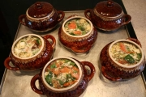

Уха из речной рыбыИнгредиенты
1 кг мелкой речной рыбы, 4 клубня картофеля, 2 помидора, 3 моркови, 2 луковицы, лавровый лист, 1 пучок зелени укропа и петрушки, перец, соль.
Способ приготовления
Рыбу промыть, выпотрошить, очистить. Картофель очистить, вымыть, нарезать кубиками. Помидоры вымыть, нарезать дольками. Зелень укропа и петрушки вымыть, нарубить. Морковь вымыть, очистить, крупно нарезать. Лук очистить, вымыть. Рыбу залить кипящей водой (3 л), варить в течение 10 минут, периодически снимая пену. Добавить морковь и лук, варить еще 5 минут, положить перец, соль, лавровый лист,
варить до готовности. Рыбу вынуть, бульон процедить, разлить по горшочкам, положить в каждый картофель и помидоры. Довести до готовности в предварительно разогретой духовке, при подаче к столу посыпать зеленью укропа и петрушки.
Уха из конгриоИнгредиенты
1 кг конгрио, 500 г мелкого молодого картофеля, 2 моркови, 1 корень петрушки, 1 луковица, 1 пучок зелени укропа, лавровый лист, перец, соль.
Способ приготовления
Рыбу промыть, крупно нарезать. Картофель тщательно вымыть с помощью щетки. Морковь и корень петрушки вымыть, очистить, крупно нарезать. Лук очистить, вымыть. Зелень укропа вымыть, нарубить.
Рыбу залить кипящей водой (2 л), варить в течение 10 минут, периодически снимая пену. Добавить морковь, корень петрушки и лук, варить еще 5 минут, положить перец, соль, лавровый лист, варить до готовности. Рыбу вынуть, отделить мясо от костей. Бульон процедить, перелить в горшочек, добавить картофель и варить до готовности. Положить в уху филе конгрио и зелень, разлить по тарелкам и подать к столу.
Уха из стерляди с белыми грибамиИнгредиенты
400 г стерляди, 4 клубня картофеля, 150 г белых грибов, 1 морковь, 1 корень петрушки, 1 луковица, 20 г сливочного масла, 1/2 пучка зелени укропа, 1/2 пучка зелени петрушки, лавровый лист, соль.
Способ приготовления
Грибы промыть, нарезать ломтиками. Морковь и корень петрушки вымыть, очистить, крупно нарезать. Лук очистить, вымыть, мелко нарезать, обжарить в сливочном масле. Зелень укропа и петрушки вымыть, нарубить.
Подготовленную рыбу промыть, залить кипящей водой (1,5 л), добавить морковь, корень петрушки и лук, варить в течение 10 минут, периодически снимая пену. Добавить укроп и лавровый лист, варить еще 5 минут, посолить, варить до готовности. Рыбу вынуть, отделить мясо от костей. Бульон процедить, разлить по порционным горшочкам, положить в каждый предварительно подготовленный картофель и грибы, варить до готовности. При подаче к столу положить в каждый горшочек рыбное филе и посыпать петрушкой.
Уха из судака с пшенной крупойИнгредиенты
1 кг судака, 4 клубня картофеля, 2 моркови, 1 луковица, 70 г пшенной крупы, 1 пучок зелени укропа и петрушки, лавровый лист, перец, соль.
Способ приготовления
Рыбу промыть, выпотрошить, очистить. Зелень укропа и петрушки вымыть, нарубить. Картофель очистить, вымыть, нарезать соломкой. Пшенную крупу промыть. Морковь вымыть, очистить, крупно нарезать. Лук очистить, вымыть. Рыбу залить кипящей водой (2 л), варить в течение 10 минут, периодически снимая пену. Добавить морковь и лук, варить еще 5 минут, положить перец, соль, лавровый лист, варить до готовности. Рыбу вынуть, вынуть кости, бульон процедить, разлить по горшочкам, положить в каждый картофель и крупу, варить до готовности. Затем положить в горшочки филе судака, посыпать зеленью и подать к столу.
Суп из горбуши с креветками и оливкамиИнгредиенты
500 г горбуши, 2 клубня картофеля, 2 помидора, 150 г очищенных креветок, 1 луковица, 1 пучок зелени петрушки, 50 г оливок без косточек, перец, соль.
Способ приготовления
Лук очистить, вымыть, крупно нарезать. Картофель очистить, вымыть, нарезать соломкой. Помидоры вымыть, обдать кипятком, снять кожицу и нарезать полукружиями. Зелень петрушки вымыть, нарубить.
Горбушу промыть, залить кипящей водой (1,5 л), варить в течение 15 минут, периодически снимая пену. Добавить лук, варить еще 5 минут, положить перец, соль, варить до готовности. Рыбу вынуть, вынуть кости, бульон процедить, разлить по горшочкам, положить картофель, варить 10 минут. Затем положить креветки и помидоры, варить 3 минуты. Положить в каждый горшочек филе горбуши и нарезанные колечками оливки, посыпать зеленью и подать к столу.
Суп из морской рыбы с луком-шалотом и сельдереемИнгредиенты
500 г филе морской рыбы, 2 клубня картофеля, 3 стебля сельдерея, 1 морковь, 100 г лука-шалота, 1 корень петрушки, 1 пучок зелени петрушки, перец, соль.
Способ приготовления
Филе рыбы промыть, нарезать порционными кусками. Морковь и корень петрушки вымыть, очистить, нарезать соломкой. Лук-шалот очистить, вымыть, мелко нарезать. Зелень петрушки вымыть, мелко нарезать. Стебли сельдерея вымыть, нарезать небольшими кусочками. Картофель очистить, вымыть, нарезать соломкой.
Филе положить в горшочек, залить 2 л холодной воды, поставить на сильный огонь. Когда вода закипит, снять пену, уменьшить огонь, добавить картофель и варить в течение 10 минут. Затем добавить лук-шалот, сельдерей, морковь и корень петрушки, посолить, поперчить, варить до готовности. При подаче к столу посыпать суп зеленью петрушки.
Уха из стерляди с помидорами и зеленым лукомИнгредиенты
300 г филе стерляди, 2 клубня картофеля, 2 моркови, 2 помидора, 1 пучок зеленого лука, лавровый лист, черный и душистый перец горошком, соль.
Способ приготовления
Картофель и морковь вымыть, очистить, нарезать кубиками. Зеленый лук вымыть, нарубить. Помидоры вымыть, обдать кипятком, снять кожицу и нарезать дольками. Филе стерляди промыть, крупно нарезать, выложить в горшочек, залить кипящей водой (1,5 л), варить в течение 5 минут. Добавить картофель и морковь, варить 10 минут, положить помидоры, перец горошком и лавровый лист, посолить, довести до готовности в предварительно разогретой духовке. При подаче к столу посыпать уху зеленым луком.
Суп из семги по-средиземноморскиИнгредиенты
500 г филе семги, 4 клубня картофеля, 40 мл оливкового масла, 2 зубчика чеснока, 10 г молотого тмина, 1 луковица, 2 моркови, лавровый лист, 5 г орегано, 5 г красного молотого перца, 2 г черного молотого перца, соль.
Способ приготовления
Картофель очистить, вымыть, нарезать кубиками. Лук и чеснок очистить, вымыть, мелко нарезать. Морковь очистить, вымыть, нарезать тонкой соломкой. Филе семги промыть, залить 1,5 л воды, добавить соль, лавровый лист, черный перец и варить до готовности.
Рыбу нарезать кусочками и переложить в отдельную посуду, бульон процедить. Лук и морковь обжарить в оливковом масле. Бульон разлить по горшочкам, добавить картофель, варить 10 минут, затем положить филе семги, морковь и лук, добавить красный перец, тмин, орегано и чеснок, довести до кипения и снять с огня.
Суп из королевского окуня с картофелем и морковьюИнгредиенты
1 л рыбного бульона, 150 г филе королевского окуня, 100 г замороженного зеленого горошка, 2 клубня картофеля, 2 моркови, 1 пучок зелени укропа и петрушки, лавровый лист, красный и черный молотый перец, соль.
Способ приготовления
Филе окуня промыть, нарезать ломтиками. Зелень укропа и петрушки вымыть, нарубить. Картофель и морковь вымыть, очистить, нарезать кубиками. Бульон довести до кипения в горшочке, добавить картофель и морковь, варить 10 минут, затем положить ломтики рыбы, зеленый горошек, лавровый лист, посолить, поперчить и варить до готовности. Разлить суп по тарелкам, посыпать зеленью и подать к столу.
Суп из сома с картофелем и рисомИнгредиенты
1 л рыбного бульона, 2 клубня картофеля, 1 морковь, 50 г риса, 200 г филе сома, 1 пучок зелени укропа и петрушки, лавровый лист, соль.
Способ приготовления
Картофель вымыть, очистить, нарезать соломкой. Морковь очистить, вымыть, нарезать кружочками. Филе сома промыть, нарезать кубиками. Зелень укропа и петрушки вымыть, нарубить. Бульон довести до кипения в горшочке, добавить картофель, морковь и предварительно промытый рис, варить 5 минут. Затем положить рыбу, лавровый лист, посолить, варить до готовности. Разлить суп по тарелкам, посыпать зеленью укропа и петрушки.
Уха из филе щукиИнгредиенты
1 л бульона из мелкой речной рыбы, 300 г филе щуки, 2 клубня картофеля, 2 моркови, 1/2 пучка зеленого лука, 1/2 пучка зелени укропа, лавровый лист, перец, соль.
Способ приготовления
Картофель и морковь вымыть, очистить, нарезать соломкой. Зеленый лук и зелень укропа вымыть, нарубить. Филе щуки промыть, крупно нарезать, выложить в горшочек, залить горячим бульоном, довести до кипения и варить в течение 5 минут. Добавить картофель и морковь, варить 10 минут, положить лавровый лист, посолить, поперчить, варить до готовности. Разлить уху по тарелкам, посыпать зеленью укропа и зеленым луком.
Суп из судака с плавленым сыром, горошком и зеленьюИнгредиенты
300 г филе судака, 200 г замороженного зеленого горошка, 6 клубней картофеля, 200 г плавленого сыра, 1 пучок зелени петрушки и укропа, 50 г сметаны, перец, соль.
Способ приготовления
Картофель вымыть, очистить, нарезать кубиками. Зелень петрушки и укропа вымыть, измельчить. 2 л воды довести до кипения в горшочке, добавить филе судака и картофель, варить на умеренном огне в течение 15 минут. Затем добавить зеленый горошек и мелко нарезанный сыр, довести до кипения, посолить, поперчить, поставить горшочек в предварительно разогретую духовку на 15 минут.
При подаче к столу заправить суп сметаной, посыпать зеленью петрушки и укропа.
Суп из морской рыбы с пшенной крупой и овощамиИнгредиенты
1 л овощного бульона, 400 г филе морской рыбы, 2 клубня картофеля, 1 морковь, 1 луковица, 50 г пшенной крупы, 20 г топленого масла, 1 пучок зелени кинзы и петрушки, лавровый лист, перец, соль.
Способ приготовления
Филе морской рыбы промыть, нарезать небольшими кусочками. Картофель и морковь вымыть, очистить, нарезать кубиками. Зелень кинзы и петрушки вымыть, нарубить. Лук очистить, вымыть, мелко нарезать, выложить на сковороду с разогретым топленым маслом, добавить морковь, обжарить.
Бульон довести до кипения, разлить по порционным горшочкам, добавить картофель, морковь, лук и пшено, варить 5 минут, положить филе, лавровый лист, посолить, поперчить и поставить в предварительно разогретую духовку на 20 минут. При подаче к столу посыпать зеленью кинзы и петрушки.
Уха из филе карпа и молодого картофеляИнгредиенты
1,5 л бульона из мелкой речной рыбы, 500 г филе карпа, 10 клубней мелкого молодого картофеля, 2 моркови, 50 г пшенной крупы, 1 луковица, 20 мл растительного масла, 1 пучок зеленого лука, лавровый лист, черный и душистый перец горошком, соль.
Способ приготовления
Картофель и морковь вымыть, очистить. Морковь нарезать кружочками. Зеленый лук вымыть, нарубить. Репчатый лук очистить, вымыть, нарезать полукольцами, обжарить в растительном масле.
Филе карпа промыть, крупно нарезать, положить в горшочек, залить кипящим бульоном и варить в течение 5 минут. Добавить предварительно промытую пшенную крупу, картофель, лук и морковь, варить 15 минут, положить лавровый лист, перец, посолить, варить до готовности. При подаче к столу посыпать зеленым луком.
Суп из горбуши с рисом и сметанойИнгредиенты
250 г консервированной в масле горбуши, 2 клубня картофеля, 50 г риса, 1 пучок зелени укропа и петрушки, 100 г сметаны, лавровый лист, перец, соль.
Способ приготовления
Картофель вымыть, очистить, нарезать кубиками. Зелень укропа и петрушки вымыть, нарубить. Рис промыть. Картофель, рис и рыбные консервы положить в горшочек, залить 1 л горячей воды, варить 15 минут, положить лавровый лист, посолить, поперчить, варить до готовности. Разлить суп по тарелкам, заправить сметаной, посыпать зеленью укропа и петрушки и подать к столу.
Суп из консервированной скумбрииИнгредиенты
1,5 л овощного бульона, 250 г консервированной в томатном соусе скумбрии, 2 клубня картофеля, 1 корень петрушки, 2 моркови, 1 луковица, 20 г сливочного масла, 1 пучок зелени укропа и петрушки, лавровый лист, перец, соль.
Способ приготовления
Картофель, корень петрушки и морковь вымыть, очистить, нарезать кубиками. Зелень укропа и петрушки вымыть, нарубить. Лук очистить, вымыть, мелко нарезать, обжарить в сливочном масле.
Картофель и морковь разложить по порционным горшочкам, залить кипящим бульоном, варить 10 минут, добавить лук, скумбрию, лавровый лист, посолить, поперчить, довести до готовности в предварительно разогретой духовке. При подаче к столу посыпать зеленью укропа и петрушки.
Суп из сардин с картофелем и горошкомИнгредиенты
250 г консервированных в масле сардин, 2 клубня картофеля, 2 моркови, 200 г свежего или замороженного зеленого горошка, 1 чайная ложка сушеной зелени укропа, 1 луковица, 20 мл растительного масла, лавровый лист, перец, соль.
Способ приготовления
Картофель и морковь вымыть, очистить, нарезать кубиками. Лук очистить, вымыть, мелко нарезать, обжарить в растительном масле вместе с морковью. Полученную смесь разложить по порционным горшочкам, добавить горошек, рыбу, сушеный укроп, лавровый лист, перец, соль. Залить содержимое горшочков кипящей водой и поставить в предварительно разогретую духовку на 25–30 минут.
Суп из консервированной горбуши с рисом и кукурузойИнгредиенты
250 г консервированной в масле горбуши, 2 клубня картофеля, 1 морковь, 1 луковица, 100 г консервированной кукурузы, 50 г риса, 20 г сливочного масла, 1 пучок зелени укропа, лавровый лист, соль.
Способ приготовления
Картофель и морковь вымыть, очистить, нарезать соломкой. Зелень укропа вымыть, нарубить. Лук очистить, вымыть, мелко нарезать, выложить на сковороду с разогретым сливочным маслом, добавить морковь, обжарить.
Лук, морковь, картофель и предварительно промытый рис выложить в горшочек, залить кипящей водой, варить 15 минут. Затем добавить рыбу, кукурузу, лавровый лист, посолить, довести до готовности в предварительно разогретой духовке. При подаче к столу посыпать суп зеленью укропа.
Суп из тунца со шпинатомИнгредиенты
300 г консервированного в масле тунца, 2 клубня картофеля, 2 моркови, 50 г пшенной крупы, 1 луковица, 20 мл растительного масла, 1 пучок шпината, 1 пучок зеленого лука, перец, соль.
Способ приготовления
Картофель и морковь вымыть, очистить, нарезать соломкой. Зеленый лук вымыть, нарубить. Шпинат вымыть, крупно нарезать. Репчатый лук очистить, вымыть, нарезать полукольцами, обжарить в растительном масле.
В горшочки положить промытую пшенную крупу, картофель, лук и морковь, залить горячей водой, варить 15 минут. Затем добавить рыбу и шпинат, посолить, поперчить, довести до готовности в предварительно разогретой духовке. При подаче к столу посыпать зеленым луком.
Суп из тунца с тофуИнгредиенты
300 г консервированного тунца, 4 клубня картофеля, 200 г тофу, 1 морковь, 1 корень петрушки, 50 г риса, 1 пучок зелени петрушки и укропа, 50 г майонеза, красный и черный молотый перец, соль.
Способ приготовления
Картофель, корень петрушки и морковь вымыть, очистить, нарезать кубиками. Зелень петрушки и укропа вымыть, измельчить.
2 л воды довести до кипения в горшочке, добавить предварительно промытый рис, варить 10 минут, положить картофель, морковь, корень петрушки и рыбу, варить на умеренном огне в течение 15 минут. Затем добавить мелко нарезанный тофу, посолить, поперчить, довести до готовности в предварительно разогретой духовке. При подаче к столу суп заправить майонезом, посыпать зеленью петрушки и укропа.
Рыбный суп с шампиньонамиИнгредиенты
1,5 л бульона из речной рыбы, 200 г филе вареной рыбы, 2 клубня картофеля, 100 г шампиньонов, 1 пучок зелени укропа и петрушки, лавровый лист, перец, соль.
Способ приготовления
Картофель вымыть, очистить, нарезать соломкой. Шампиньоны промыть, нарезать ломтиками. Зелень укропа и петрушки вымыть, нарубить. Бульон довести до кипения в горшочке, добавить картофель и шампиньоны, варить 10 минут. Затем положить лавровый лист, нарезанное рыбное филе, посолить, поперчить, довести до готовности в предварительно разогретой духовке. При подаче к столу посыпать зеленью укропа и петрушки.
Суп из консервированной сардинеллы с кукурузой и болгарским перцемИнгредиенты
250 г консервированной в масле сардинеллы, 2 стручка болгарского перца, 2 клубня картофеля, 50 г консервированной кукурузы, 1 корень петрушки, 1 луковица, 20 г сливочного масла, 1 пучок зелени укропа, лавровый лист, перец, соль.
Способ приготовления
Болгарский перец вымыть, удалить плодоножки и семена, нарезать соломкой. Картофель и корень петрушки вымыть, очистить, нарезать кубиками. Лук очистить, вымыть, нарезать полукольцами, обжарить в сливочном масле. Зелень укропа вымыть, нарубить.
Картофель, корень петрушки, лук и рыбные консервы разложить по горшочкам, залить кипящей водой, варить 15 минут. Затем положить болгарский перец, кукурузу, лавровый лист, посолить, поперчить, довести до готовности в предварительно разогретой духовке. При подаче к столу посыпать зеленью.
Уха из щукиИнгредиенты
300 г щучьих голов, 300 г филе щуки, 3 клубня картофеля, 1 морковь, 50 г перловой крупы, 1 корень петрушки, 1 луковица, 50 г томатной пасты, 20 мл растительного масла, 1 пучок зелени укропа и петрушки, лавровый лист, перец, соль.
Способ приготовления
Филе щуки промыть, нарезать небольшими кусочками. Перловую крупу варить до полуготовности. Картофель, морковь и корень петрушки вымыть, очистить, нарезать кружочками. Лук очистить, вымыть, нарезать полукольцами, выложить на сковороду с разогретым растительным маслом, обжарить, добавить томатную пасту, тушить 3 минуты. Зелень укропа и петрушки вымыть, нарубить.
Щучьи головы промыть, залить 1,5 л воды, довести до кипения, сварить бульон, процедить.
Филе щуки разложить по порционным горшочкам, добавить картофель, морковь, перловую крупу и корень петрушки, залить горячим бульоном, варить 10 минут. Затем положить лук с томатной пастой, лавровый лист, посолить, поперчить, довести до готовности в предварительно разогретой духовке. Украсить зеленью укропа и петрушки.
Уха из окуняИнгредиенты
500 г окуня, 2 клубня картофеля, 2 моркови, 20 г пшенной крупы, лавровый лист, 1 пучок зелени укропа и петрушки, соль.
Способ приготовления
Картофель и морковь вымыть, очистить, нарезать кубиками. Зелень укропа и петрушки вымыть, мелко нарезать.
Рыбу промыть, очистить, выпотрошить, залить кипящей водой (1,5 л), варить в течение 15 минут, вынуть из бульона. Разделать рыбу на филе. Бульон процедить, разлить по горшочкам, добавить картофель, морковь и пшенную крупу, варить 10 минут, положить лавровый лист, посолить, варить до готовности. При подаче к столу добавить в уху укроп, петрушку и филе окуня.
Суп из морского языка с морковью и лукомИнгредиенты
500 г филе морского языка, 1 морковь, 1 луковица, 1 корень петрушки, 1 пучок зелени базилика, красный и черный молотый перец, соль.
Способ приготовления
Морковь и корень петрушки вымыть, очистить, нарезать соломкой. Лук очистить, вымыть, мелко нарезать. Зелень базилика вымыть, нарубить.
Филе промыть, нарезать небольшими кусочками, положить в горшочек, залить 2 л холодной воды, поставить на сильный огонь. Когда вода закипит, снять пену, уменьшить огонь, варить в течение 20 минут. Добавить лук, морковь и корень петрушки, посолить, поперчить, довести до готовности в предварительно разогретой духовке. При подаче к столу посыпать суп зеленью базилика.
Суп из карпа с помидорамиИнгредиенты
600 г карпа, 5 помидоров, 100 г риса, 1 пучок зелени петрушки, лавровый лист, перец горошком, молотый перец, соль.
Способ приготовления
Рыбу промыть, выпотрошить, почистить, нарезать порционными кусками, залить холодной водой, довести на слабом огне до кипения, варить в течение 15 минут. Бульон посолить, добавить перец горошком, лавровый лист, варить еще 5–7 минут. Рыбу вынуть из бульона. Помидоры вымыть, обдать кипятком, снять кожицу, нарезать кружочками. Бульон процедить, разлить по порционным горшочкам, довести до кипения, добавить рис, варить в течение 15 минут. Положить помидоры, молотый перец, варить еще 5 минут. Зелень петрушки вымыть, нарубить. Украсить зеленью укропа и петрушки.
Суп из морского окуня с кукурузойИнгредиенты
500 г филе морского окуня, 200 г консервированной кукурузы, 20 мл белого вина, 20 мл кукурузного масла, 5 г кукурузного крахмала, 1/2 пучка зеленого лука, соль.
Способ приготовления
Филе морского окуня промыть, нарезать небольшими кусочками, сбрызнуть вином, оставить на 10 минут. Зеленый лук вымыть, нарубить. В порционные горшочки положить рыбу, кукурузу, залить горячей водой, добавить кукурузное масло, посолить, варить 15 минут, добавить разведенный водой крахмал и варить в течение 2 минут.
Суп подать к столу в горшочках, положив в каждый зеленый лук.
Суп из трески с рисом и овощамиИнгредиенты
1 л рыбного бульона, 200 г филе трески, 30 г риса, 1 луковица, 1 стручок сладкого перца, 1 помидор, 20 г сливочного масла, 1/2 пучка зелени петрушки и укропа, перец, соль.
Способ приготовления
Помидоры вымыть, нарезать дольками. Сладкий перец вымыть, удалить плодоножку и семена, мелко нарезать. Лук очистить, вымыть, мелко нарезать, спассеровать в сливочном масле. Зелень петрушки и укропа вымыть, нарубить.
Рис выложить в горшочек, влить бульон, довести до кипения, варить 15 минут. Добавить промытое и крупно нарезанное филе трески, варить 5 минут, добавить лук, перец, помидоры, посолить, поперчить, довести суп до готовности в предварительно разогретой духовке. Суп разлить по тарелкам, посыпать зеленью петрушки и укропа и подать к столу.